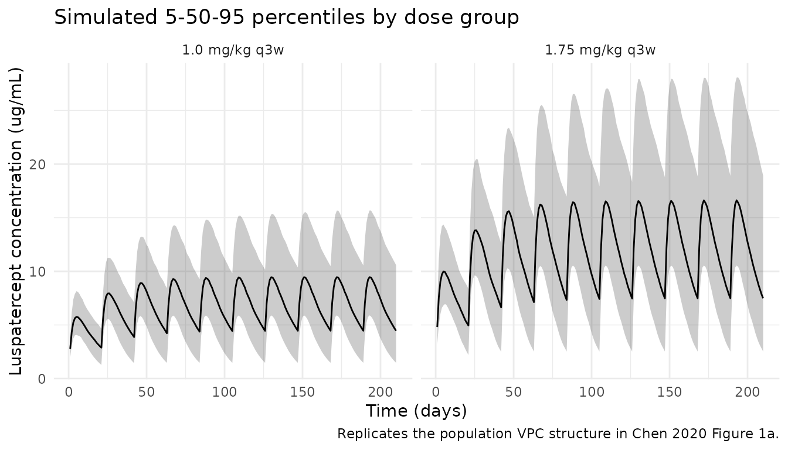

Chen_2020_luspatercept
Source:vignettes/articles/Chen_2020_luspatercept.Rmd
Chen_2020_luspatercept.RmdModel and source
- Citation: Chen N, Kassir N, Laadem A, Giuseppi AC, Shetty JK, Maxwell SE, Sriraman P, Ritland S, Linde PG, Budda B, Reynolds J, Ramji P, Palmisano M, Zhou S. Population Pharmacokinetics and Exposure-Response of Luspatercept, an Erythroid Maturation Agent, in Anemic Patients With Myelodysplastic Syndromes. CPT Pharmacometrics Syst Pharmacol. 2020 Oct;9(10):395-404. doi:10.1002/psp4.12515
- Description: One-compartment population PK model for luspatercept (activin receptor type IIB / IgG1 Fc-fusion) in adults with anemia due to myelodysplastic syndromes (Chen 2020), with first-order subcutaneous absorption, first-order linear elimination parameterised in CL/F and V1/F, body weight + age + baseline albumin power covariates on CL/F, and body weight + baseline albumin power covariates on V1/F.
- Article: CPT Pharmacometrics Syst Pharmacol. 2020;9(10):395-404
Population
The Chen 2020 population PK analysis pooled 260 adult patients with anemia due to lower-risk myelodysplastic syndromes (MDS) from two studies: the phase II A536-03 (“PACE-MDS”, NCT01749514, n = 107) and the pivotal phase III ACE-536-MDS-001 (“MEDALIST”, NCT02631070, n = 153). All patients received luspatercept subcutaneously every 3 weeks (q3w) at doses ranging from 0.125 to 1.75 mg/kg. Most patients (91.0%) started at 1.0 mg/kg with stepwise titration to 1.33 or 1.75 mg/kg as needed for inadequate hemoglobin response or persistent transfusion need.
Baseline demographics (Chen 2020 Table 1): 38.8% female; median age 72 years (range 27-95); median weight 76.3 kg (range 46-124); 82.3% White; median baseline albumin 44 g/L (range 31.0-52.6); median eGFR 73.1 mL/min/1.73 m^2 (range 29.6-150). 26.9% had no renal impairment, 51.5% mild, and 21.5% moderate; 59.2% had no hepatic impairment, 31.5% mild, 8.8% moderate, and 0.4% severe. 38.5% received concurrent iron chelation therapy. 2,403 quantifiable luspatercept concentrations were collected 4-784 days after the first dose using a validated ELISA with assay range 50-600 ng/mL.
The same information is available programmatically via
readModelDb("Chen_2020_luspatercept")$population.
Source trace
Per-parameter origin is recorded as an in-file comment next to each
ini() entry in
inst/modeldb/specificDrugs/Chen_2020_luspatercept.R. The
table below collects them for review.
| Equation / parameter | Value | Source location |
|---|---|---|
| Structural model | 1-compartment, first-order absorption + elimination | Results “Luspatercept population PK model” |
lcl (CL/F) |
log(0.469) L/day |
Table 2, “CL/F, L/day” |
lvc (V1/F) |
log(9.22) L |
Table 2, “V1/F, L” |
lka (Ka) |
log(0.456) 1/day |
Table 2, “Ka, 1/day” |
e_wt_cl |
0.769 |
Table 2, “Weight, kg, on CL/F” |
e_age_cl |
-0.534 |
Table 2, “Age, years, on CL/F” |
e_alb_cl |
-1.17 |
Table 2, “Albumin, g/L, on CL/F” |
e_wt_vc |
0.877 |
Table 2, “Weight, kg, on V1/F” |
e_alb_vc |
-0.610 |
Table 2, “Albumin, g/L, on V1/F” |
| Final CL/F equation | 0.469*(WT/70)^0.769*(AGE/72)^-0.534*(ALB/44)^-1.17 |
Results, “The final covariate model for CL/F” |
| Final V1/F equation | 9.22*(WT/70)^0.877*(ALB/44)^-0.610 |
Results, “The final covariate model for V1/F” |
etalcl (IIV CL/F) |
variance 0.1325 (sqrt = 36.4%) |
Table 2, “Interindividual variability of CL/F” |
etalvc (IIV V1/F) |
variance 0.0506 (sqrt = 22.5%) |
Table 2, “Interindividual variability of V1/F” |
propSd (residual) |
0.224 |
Table 2, “Residual variability” (log-additive in NONMEM, 22.4%) |
| Mean t1/2 | ~13 days | Results, “The mean elimination half-life of luspatercept was ~ 13 days” |
| Mean AUC_ss (1.0-1.75 mg/kg) | 151-264 day*ug/mL | Results, end of “Exposure-response of efficacy” paragraph 2 |
| AUC_ss IIV | 38.0% | Results, “The IIV for AUC ss was 38.0%” |
Virtual cohort
Original observed data are not publicly available. The cohort below approximates the Chen 2020 Table 1 demographics: weight, age, and baseline albumin sampled from log-normal-like distributions matched to the published medians and ranges, sex sampled at the published 38.8% female prevalence.
set.seed(20260425)
n_subj <- 500
# Truncated-normal-style sampler that approximates a population with a given
# median and a published min-max range. Bounded so simulated subjects sit
# inside the trial inclusion envelope.
sample_in_range <- function(n, median, lo, hi, sd) {
out <- rnorm(n, mean = median, sd = sd)
pmin(pmax(out, lo), hi)
}
cohort <- tibble::tibble(
id = seq_len(n_subj),
WT = sample_in_range(n_subj, median = 76.3, lo = 46, hi = 124, sd = 17),
AGE = sample_in_range(n_subj, median = 72, lo = 27, hi = 95, sd = 9),
ALB = sample_in_range(n_subj, median = 44, lo = 31, hi = 52.6, sd = 4),
SEXF = rbinom(n_subj, 1, prob = 0.388)
)
# Two dose groups bracketing the recommended titration range (1.0 mg/kg
# starting and 1.75 mg/kg maximum). Chen 2020 reports mean AUC_ss between
# 151 day*ug/mL (at 1.0 mg/kg) and 264 day*ug/mL (at 1.75 mg/kg).
build_events <- function(cohort, dose_mgkg, n_doses = 10, tau = 21,
id_offset = 0L, label) {
base <- dplyr::mutate(cohort, id = id + id_offset)
obs_times <- sort(unique(c(seq(0, n_doses * tau, by = 1),
(n_doses - 1) * tau + c(0.25, 0.5, 1, 2, 3, 5, 7, 10, 14, 17, 21))))
doses <- base |>
tidyr::crossing(time = seq(0, by = tau, length.out = n_doses)) |>
dplyr::mutate(amt = WT * dose_mgkg, cmt = "depot", evid = 1L,
treatment = label)
obs <- base |>
tidyr::crossing(time = obs_times) |>
dplyr::mutate(amt = 0, cmt = NA_character_, evid = 0L,
treatment = label)
dplyr::bind_rows(doses, obs) |>
dplyr::arrange(id, time, dplyr::desc(evid)) |>
dplyr::select(id, time, amt, cmt, evid, WT, AGE, ALB, SEXF, treatment)
}
events <- dplyr::bind_rows(
build_events(cohort, dose_mgkg = 1.00, id_offset = 0L, label = "1.0 mg/kg q3w"),
build_events(cohort, dose_mgkg = 1.75, id_offset = 1000L, label = "1.75 mg/kg q3w")
)
stopifnot(!anyDuplicated(unique(events[, c("id", "time", "evid")])))Simulation
mod <- rxode2::rxode2(readModelDb("Chen_2020_luspatercept"))
sim <- rxode2::rxSolve(mod, events = events,
keep = c("WT", "AGE", "ALB", "SEXF", "treatment"))For deterministic replication of typical-subject behaviour (no between-subject variability), zero out the random effects:
mod_typical <- mod |> rxode2::zeroRe()
# Reference subject from Chen 2020: 70 kg, 72 yr, 44 g/L albumin.
typical_scenarios <- tibble::tibble(
id = c(1L, 2L),
scenario = c("Reference 70 kg @ 1.0 mg/kg", "Reference 70 kg @ 1.75 mg/kg"),
WT = 70, AGE = 72, ALB = 44, SEXF = 0L,
dose_mg = c(70 * 1.00, 70 * 1.75)
)
ev_typical <- do.call(rbind, lapply(seq_len(nrow(typical_scenarios)), function(i) {
ev_i <- rxode2::et(amt = typical_scenarios$dose_mg[i], cmt = "depot",
ii = 21, addl = 9) |>
rxode2::et(seq(0, 210, by = 0.5)) |>
as.data.frame()
ev_i$id <- typical_scenarios$id[i]
ev_i
}))
sim_typical <- rxode2::rxSolve(
mod_typical, events = ev_typical,
params = typical_scenarios[, c("id", "WT", "AGE", "ALB", "SEXF")],
returnType = "tibble"
) |>
dplyr::left_join(typical_scenarios[, c("id", "scenario")], by = "id")
#> ℹ omega/sigma items treated as zero: 'etalcl', 'etalvc'
#> Warning: multi-subject simulation without without 'omega'Replicate published figures
Figure 1a — visual predictive check by dose group
Chen 2020 Figure 1a is a population VPC of luspatercept serum concentration over time. The simulated cohort below summarises the 5th, 50th, and 95th percentiles of concentration through 10 q3w doses (the treatment window evaluated in the paper for the primary efficacy endpoint, weeks 1-24).
sim |>
dplyr::filter(!is.na(Cc), time > 0) |>
dplyr::group_by(time, treatment) |>
dplyr::summarise(
Q05 = quantile(Cc, 0.05, na.rm = TRUE),
Q50 = quantile(Cc, 0.50, na.rm = TRUE),
Q95 = quantile(Cc, 0.95, na.rm = TRUE),
.groups = "drop"
) |>
ggplot(aes(time, Q50)) +
geom_ribbon(aes(ymin = Q05, ymax = Q95), alpha = 0.25) +
geom_line() +
facet_wrap(~treatment) +
labs(x = "Time (days)", y = "Luspatercept concentration (ug/mL)",
title = "Simulated 5-50-95 percentiles by dose group",
caption = "Replicates the population VPC structure in Chen 2020 Figure 1a.") +
theme_minimal()
Figure 1b — clinical relevance of covariates on AUC_ss
Chen 2020 Figure 1b reports the percentage difference in AUC_ss / Cmax_ss at extreme covariate values relative to “normal” (10th-90th percentile) covariate values. Body weight + 1.0 mg/kg weight-based dosing produces a < 10% AUC_ss difference between heavy and light patients, while age and albumin produce < 20% AUC_ss differences. The chunk below reproduces this sensitivity using simulated typical-subject AUC_ss across covariate extremes (weight 46-124 kg, age 27-95 years, albumin 31-53 g/L).
cov_grid <- tibble::tibble(
scenario = c("WT low (46 kg)", "WT high (124 kg)",
"AGE low (27 yr)", "AGE high (95 yr)",
"ALB low (31 g/L)", "ALB high (53 g/L)",
"Reference (76.3 kg, 72 yr, 44 g/L)"),
WT = c(46, 124, 76.3, 76.3, 76.3, 76.3, 76.3),
AGE = c(72, 72, 27, 95, 72, 72, 72),
ALB = c(44, 44, 44, 44, 31, 53, 44),
SEXF = 0L
) |>
dplyr::mutate(
id = dplyr::row_number(),
dose_mg = WT * 1.0,
# CL/F at the simulated covariate combination per Chen 2020 Results equation
cl_pred = 0.469 * (WT/70)^0.769 * (AGE/72)^(-0.534) * (ALB/44)^(-1.17),
aucss_pred = dose_mg / cl_pred # day*ug/mL over a 21-day interval
)
ref_aucss <- cov_grid$aucss_pred[cov_grid$scenario == "Reference (76.3 kg, 72 yr, 44 g/L)"]
cov_grid |>
dplyr::mutate(pct_diff = 100 * (aucss_pred - ref_aucss) / ref_aucss) |>
knitr::kable(digits = 2,
caption = "Predicted AUC_ss across covariate extremes vs. the reference subject (replicates the structure of Chen 2020 Figure 1b for AUC_ss only).")| scenario | WT | AGE | ALB | SEXF | id | dose_mg | cl_pred | aucss_pred | pct_diff |
|---|---|---|---|---|---|---|---|---|---|
| WT low (46 kg) | 46.0 | 72 | 44 | 0 | 1 | 46.0 | 0.34 | 135.46 | -11.03 |
| WT high (124 kg) | 124.0 | 72 | 44 | 0 | 2 | 124.0 | 0.73 | 170.33 | 11.87 |
| AGE low (27 yr) | 76.3 | 27 | 44 | 0 | 3 | 76.3 | 0.85 | 90.18 | -40.77 |
| AGE high (95 yr) | 76.3 | 95 | 44 | 0 | 4 | 76.3 | 0.43 | 176.55 | 15.95 |
| ALB low (31 g/L) | 76.3 | 72 | 31 | 0 | 5 | 76.3 | 0.75 | 101.07 | -33.62 |
| ALB high (53 g/L) | 76.3 | 72 | 53 | 0 | 6 | 76.3 | 0.40 | 189.29 | 24.33 |
| Reference (76.3 kg, 72 yr, 44 g/L) | 76.3 | 72 | 44 | 0 | 7 | 76.3 | 0.50 | 152.25 | 0.00 |
PKNCA validation
Compute Cmax, Tmax, AUC over the last (steady-state) dosing interval,
and terminal half-life using PKNCA. Stratify by dose group
so results can be compared against the paper’s reported AUC_ss range and
~13-day half-life.
# Restrict to the last (10th) dosing interval as the steady-state interval.
ss_start <- 9 * 21 # day 189
ss_end <- 10 * 21 # day 210
sim_nca <- sim |>
dplyr::filter(!is.na(Cc), time >= ss_start, time <= ss_end) |>
dplyr::mutate(time_ss = time - ss_start) |>
dplyr::select(id, time_ss, Cc, treatment)
conc_obj <- PKNCA::PKNCAconc(sim_nca, Cc ~ time_ss | treatment + id)
dose_df <- events |>
dplyr::filter(evid == 1, time == ss_start) |>
dplyr::mutate(time_ss = 0) |>
dplyr::select(id, time_ss, amt, treatment)
dose_obj <- PKNCA::PKNCAdose(dose_df, amt ~ time_ss | treatment + id)
intervals <- data.frame(
start = 0,
end = 21,
cmax = TRUE,
tmax = TRUE,
auclast = TRUE,
half.life = TRUE
)
nca_res <- PKNCA::pk.nca(PKNCA::PKNCAdata(conc_obj, dose_obj, intervals = intervals))
#> ■■■■■ 13% | ETA: 14s
#> ■■■■■■■■■■■ 34% | ETA: 10s
#> ■■■■■■■■■■■■■■■■■ 55% | ETA: 7s
#> ■■■■■■■■■■■■■■■■■■■■■■■ 74% | ETA: 4s
#> ■■■■■■■■■■■■■■■■■■■■■■■■■■■■■■ 96% | ETA: 1s
summary(nca_res)
#> start end treatment N auclast cmax tmax
#> 0 21 1.0 mg/kg q3w 500 149 [40.3] 9.48 [29.9] 4.00 [3.00, 5.00]
#> 0 21 1.75 mg/kg q3w 500 262 [40.9] 16.7 [31.4] 4.00 [3.00, 5.00]
#> half.life
#> 14.9 [6.64]
#> 15.1 [7.22]
#>
#> Caption: auclast, cmax: geometric mean and geometric coefficient of variation; tmax: median and range; half.life: arithmetic mean and standard deviation; N: number of subjectsComparison against published values
Chen 2020 reports a mean elimination half-life of ~13 days and mean AUC_ss values of 151-264 day*ug/mL for the 1.0-1.75 mg/kg dose range (Results, “Luspatercept population PK model” and “Exposure-response of efficacy”). The IIV of AUC_ss was 38.0%.
nca_tbl <- as.data.frame(nca_res$result) |>
dplyr::filter(PPTESTCD %in% c("auclast", "half.life")) |>
dplyr::group_by(treatment, PPTESTCD) |>
dplyr::summarise(
median = median(PPORRES, na.rm = TRUE),
cv_pct = 100 * sd(PPORRES, na.rm = TRUE) / mean(PPORRES, na.rm = TRUE),
.groups = "drop"
) |>
tidyr::pivot_wider(names_from = PPTESTCD, values_from = c(median, cv_pct))
published <- tibble::tribble(
~treatment, ~published_aucss, ~published_thalf, ~published_cv_aucss,
"1.0 mg/kg q3w", "151 day*ug/mL (mean)", "~13 days", "38.0%",
"1.75 mg/kg q3w", "264 day*ug/mL (mean)", "~13 days", "38.0%"
)
dplyr::left_join(published, nca_tbl, by = "treatment") |>
knitr::kable(digits = 2,
caption = "Simulated steady-state AUC and terminal t1/2 vs. Chen 2020 Results.")| treatment | published_aucss | published_thalf | published_cv_aucss | median_auclast | median_half.life | cv_pct_auclast | cv_pct_half.life |
|---|---|---|---|---|---|---|---|
| 1.0 mg/kg q3w | 151 day*ug/mL (mean) | ~13 days | 38.0% | 150.33 | 13.59 | 38.62 | 44.68 |
| 1.75 mg/kg q3w | 264 day*ug/mL (mean) | ~13 days | 38.0% | 257.36 | 13.30 | 40.99 | 47.79 |
Assumptions and deviations
- Original individual-level data are not public. The virtual cohort uses truncated-normal sampling to match the Chen 2020 Table 1 medians and ranges for weight, age, and baseline albumin. Race distribution (82.3% White) is documented in the population metadata but not used by the model: race was tested as a candidate covariate in Chen 2020 and was not retained.
- Chen 2020 fitted log-transformed luspatercept concentrations with an
additive residual error model in NONMEM. This is equivalent to a
proportional residual error in linear (concentration) space; the
reported 22.4% maps directly to
propSd = 0.224in nlmixr2. - IIV was reported as the square root of
omega^2expressed as a percentage (the standard NONMEM exponential-IIV reporting). The cross-check is the AUC_ss IIV of 38.0% reported in Results: withsqrt(omega^2_CL) = 0.364, the predicted log-normal CV% on AUC is100 * sqrt(exp(0.364^2) - 1) = 37.7%, which agrees with the published 38.0%. - No IIV on Ka. Chen 2020 Methods state that “Inclusion of IIV for absorption rate constant led to large shrinkage”, so this random effect was excluded by the original authors.
- The model is parameterised in apparent CL/F and V1/F. Absolute bioavailability is not estimated; the full subcutaneous dose enters the depot compartment and the apparent volume / clearance absorb F.
- Steady-state AUC is computed from the 10th dosing interval (days 189-210) of a 10-dose q3w regimen. With a typical CL/F of 0.469 L/day and an apparent half-life of ~13 days, accumulation at q3w is modest and steady state is essentially reached by the 5th-6th dose.
- The Figure 1b reproduction uses an analytical AUC_ss prediction (dose / CL/F) at the typical-subject level for clarity; this is the same calculation Chen 2020 used in their Monte Carlo covariate sensitivity analysis but without the additional sources of variability (IIV, residual error, random sampling) that contribute to the published Figure 1b error bars.